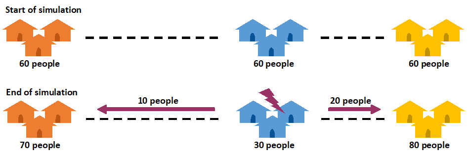
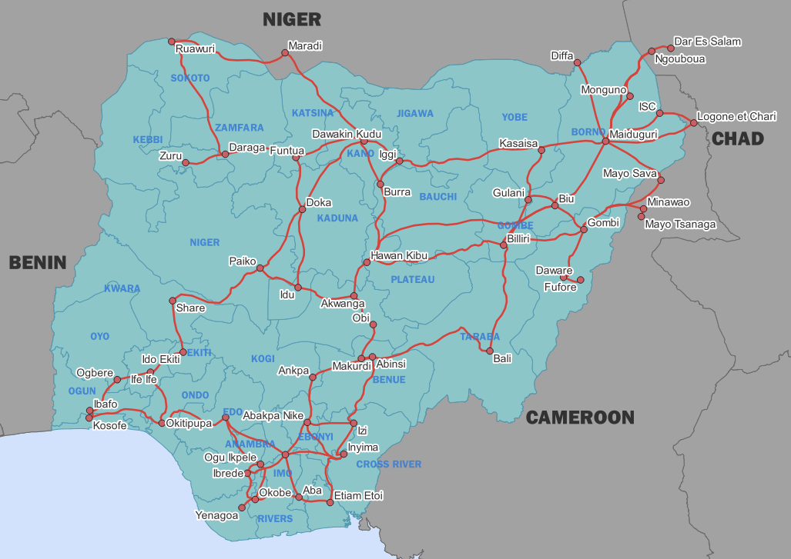
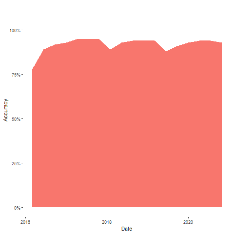

Predictive Displacement project
Nigeria ABM simulation progress update
1. Introduction
1.1 Agent based models
The most common forms of predictive modelling rely on large amounts of historical data. This is a significant issue in the humanitarian sector in which data is often messy and incomplete, particularly in the countries that are most likely to be of interest.
Agent-based models provide an alternative approach. Instead, we create a simulation with a number of agents, who then act according to rules we have created based on how we understand people’s behaviour. We only need data in order to verify whether our model is performing accurately – though it can also help us establish the rules we need.
In this simple example of an agent-based model, we create three towns along a road, each with 60 people in them. We decide that if a disaster occurs, people are 50% likely to leave the disaster location, and than a shorter route is twice as attractive as a longer one. We then create a simulation in which a disaster occurs in the blue, middle town.
At the end of the simulation and because of the rules we set, 50% of people have left the blue town, but more have gone to the yellow town because of the shorter travel time. By adding more rules and a more complex network map we can make extremely detailed agent-based models.
1.2 Nigeria
Our focus in Nigeria is the north-eastern regions of Adamawa, Borno and Yobe – though our initial geographic network is wider to allow flows across the country. Our model applies outbreaks of conflict to the network, in order to predict where displaced people will move to – whether elsewhere in Nigeria or across the border into Cameroon, Chad or Niger. This will allow new insight and data on the needs of displaced populations and their likely locations for support.
The long term vision for this model is integration into an early warning system, to allow systematic prediction of displacement needs.
 The current model network2. Model design
2.1 Conflict data
Past conflict locations are taken from ACLED data. For future simulations, conflicts can be added wherever chosen, allowing specific scenarios to be evaluated. On the completion of a wider early warning system, potential conflict events can be provided to the model to predict outcomes.
2.2 Locations
In this first version of the model, locations were selected with the following criteria:
- Five key IDP locations based on IOM data
- Eight cross border locations in Cameroon, Chad and Niger, based on UNHCR data
- Additional locations in Nigeria, chosen primarily for their contribution to establishing a travel network across the country. In the future the model can be expanded to include greater numbers of settlements and an even wider travel network.
Since verification data on numbers of displaced people is available for the IOM and UNHCR locations, we can use our predictions at these locations to measure the model performance.
2.3 Routes
The routes connecting these locations are based on OpenStreetMap data. When agents in the model decide whether to use a route or not, they consider the cost of its use. Currently that cost is solely based on the distance, and agents prefer shorter routes to their destination. However other factors can be included, such as the difficulty of the terrain or perceived risk of travel through it.
2.4 Displaced populations
Once the network of locations and routes is established, we need to add displaced population whose movement we will track. At the start of the simulation, we assign the number of displaced people to all of the locations that we have created in accordance with IOM data. As the simulation proceeds, we create new agents in response to conflicts, adding them to locations to simulate the arrival of newly displaced people from outside the current network.
The number and location of new agents is calculated based the presence of conflict and size of the local population. As with other aspects of the agent-based model, the way in which agents are added is flexible and can easily be adjusted. As our geographical network is extended to include other settlements, we will be able to introduce methodology to predict the displaced outflow from specific locations in more detail, and apply machine learning approaches for greater accuracy.
2.5 Disaggregation
It is crucial that we are able to disaggregate predicted populations by age and sex to allow the needs of these populations to be identified and met, but such predictions are challenging as disaggregated data on displaced populations is sparse. Our model draws on disaggregated data for displaced people from IOM locations around Nigeria, and national statistical data sources for regional populations within Nigeria.
3. Rules and assumptions
Agent-based approaches give us a lot of freedom in how we build the rules that will determine how people behave. In this model those rules determine how they move across the network in response to conflict. For this simulation we started with rules from previous applications – foremost a recent simulation based on Ethiopia.
These were then provided to the Nigeria country office for an initial check of their accuracy for the new context. Following this, a direct data collection exercise was completed to further verify the ruleset, and to gather new insights for the model. This was targeted at actors based in our regions of interest, with insight into displacement populations. It asked questions related to the size and composition of groups of displaced people, how they choose their destinations, when and why they depart, and how they travel.
There is no limit on the number of rules that can be applied to an agent-based model, and any observation or data that provides insight into how and where displaced people move can be used to improve the model’s performance. We are particularly interested in new insights into how displaced people choose a destination, and how age and sex affects their decisions and movement.
4. Performance
4.1 Overall performance
Here we compare our predictions with trues values for the number of displaced people in locations at the end of the 100 day simulation period, based on IOM and UNHCR data. The graph below shows that over the six year period in which we performed simulations, accuracy is consistently high.
It should however be noted that performance is boosted by the simplicity of the current geographic network, and the large number of displaced people who do not move during the course of the simulation. As the model develops further in complexity, we will seek to maintain this high performance threshold.
 Model accuracy over a six year evaluation period4.2 Location performance
If we evaluate performance at key locations, we see good performance in nearly all of them. Note that the simulations include both domestic camps within Nigeria and cross-border camps. We see no significant difference in accuracy between locations within Nigeria and across borders, suggesting that at the current level of complexity, both types of displacement are sufficiently captured by the model.
| Locations | Country | Simulated | Actual | Accuracy |
|---|---|---|---|---|
| Minawao | Cameroon | 56,863 | 59,579 | 95% |
| Logone et Chari | Cameroon | 26,799 | 33,961 | 79% |
| Mayo Sava | Cameroon | 7,882 | 8,240 | 96% |
| Mayo Tsanaga | Cameroon | 4,325 | 4,456 | 97% |
| Diffa | Niger | 111,045 | 119,441 | 93% |
| Dar es Salam | Chad | 13,086 | 10,461 | 75% |
| Ngouboua | Chad | 1,846 | 247 | 13% |
| Daware | Nigeria | 2,945 | 2,406 | 78% |
| Fufore | Nigeria | 1,236 | 1,055 | 83% |
| ISC | Nigeria | 55,428 | 57,490 | 97% |
| Kasaisa | Nigeria | 2,823 | 2,509 | 88% |
| Monguno | Nigeria | 27,893 | 28,784 | 97% |
4.3 Disaggregation performance
Due to the lack of disaggregation in data on displaced populations, there is limited data available for us to validate our predictions on the age and sex of displaced populations. However some suitable data is available for some IOM locations inside Nigeria. The below table shows a minimal degree of error for both categories in these locations. This suggests the model is disaggregating predicted populations successfully, but requires further investigation – particularly for locations outside Nigeria.
| Locations | Sex | Age |
|---|---|---|
| Minawao | 5.6% | 7.7% |
| Logone et Chari | 2.5% | 1% |
| Mayo Sava | 0.5% | 2.4% |
| Mayo Tsanaga | 4.2% | 6.1% |
| Diffa | 0.5% | 0.9% |
5. Visualisations
5.1 Interactive flow chart
This chart shows the movement between key locations in NE Nigeria and nearby cross border locations during the simulation. It allows examination of the destination and source of displaced populations from each location, and of the flows between them.
Disaggregated age and sex data is also shown, and graphs provide insight into movement over the 100 day simulation.
Predicted flows between key locations5.2 Interactive map
This map shows the network used by the model, which extends beyond the NE region of the country that forms our focus. This map allows individual segments of routes to be examined to see which are predicted to be used most over the simulation. Locations also provide data on their populations at the end of the simulation.
Disaggregated age and sex data is also shown, and graphs provide insight into shifting patterns over the 100 day simulation.